Signal Processing
PASTa is designed with accessibility and flexibility in mind, aiming to make code-based signal processing tools available to users with minimal experience. Each function includes carefully chosen default parameters that performed reliably and conservatively across a range of sensors. If desired, users can easily override any defaults using optional inputs, allowing full control over the analysis.
After raw fiber photometry data is loaded in to MATLAB (see Data Preparation, signal processing is conducted to account for photobleaching, motion artifacts, and other sources of "noise". The signal processing functions are written to be as flexible to differing streams and naming conventions as possible, but if the functions don't match your data, please reach out and let us know and we will update.
Background Scaling and Subtraction Methods
Subtraction of the background stream from the signal stream controls for the overall rate of photobleaching, sources of noise common to both channels, and motion artifacts. The resultant subtracted stream is then filtered to reduce high frequency noise. To subtract the background stream from the control stream, the background first must be scaled to the signal. PASTa has set default parameters for background scaling, subtraction, and filtering. Unless modified, default parameters will be applied. However, optional inputs for each parameter are available to provide users with full control over every aspect of the signal processing.
By default, PASTa scales the background control stream to the signal stream, performs background subtraction, and filters the signal, outputting the processed stream as ΔF/F. Default scaling applies a frequency domain-based approach, determining a constant scaling factor from the ratio of the power in the frequency band from 10 Hz to 100 Hz between the background and signal streams. To determine the scaling factor, both signal and background streams are centered at 0 and Fast Fourier Transform (FFT) is used to convert both centered streams to the frequency domain (figure panel B). This allows a constant scaling factor to be determined by the components of the streams that should be weighted equally across signal and background. The raw background stream is then multiplied by the scaling factor, and the mean of the signal channel is added to produce the scaled background stream (figure panel C). This range of frequencies was selected as they are typically higher than the possible kinetics of the fluorescent sensor (e.g., noise) [13, 19, 29], and thus should be equally represented in the signal and background streams. This approach is advantageous in that it ensures that the background is not under or over scaled relative to the signal (figure panel D) and preserves the shape of the background stream through scaling. This approach also preserves the use of the background channel for artifact and photobleaching removal even when the background channel wavelength is not a true isosbestic point for the sensor, as motion artifacts will remain correlated and photobleaching is still constant in the absence of true channel independence (see below for a comparison of background scaling methods across multiple sensors).
After scaling, the scaled background is then subtracted from the signal, and the result is divided by the scaled background multiplied by 100 to output the subtracted signal in F/F (figure panel E). Finally, the subtracted signal is filtered with a 3rd order bandpass Butterworth filter with a high-pass cutoff of 2.286 Hz and a low-pass cutoff of 0.0051 Hz to remove the DC offset of the subtracted signal and attenuate high frequency noise (figure panels F-H). Prior to filtering, the data stream will be padded by 10% to prevent edge effects. Padding is removed from the final output.
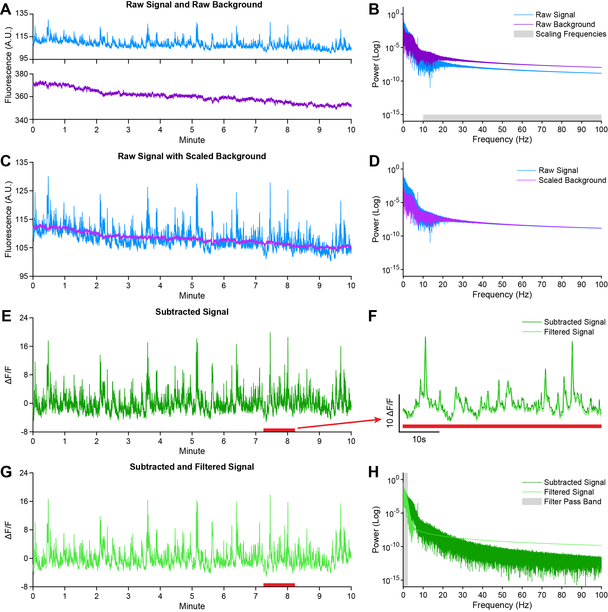 Figure: Background scaling, subtraction, and filtering example. Representative example of default signal processing steps for a single recording session (VTA dopamine activity, GCaMP6f). A) Raw signal (465nm) and raw background (405nm) streams. B) FFT power spectrum of the raw signal and raw background streams with the power across frequencies from 0 to 100 Hz plotted in logarithmic scale. The scaling factor constant is determined in the frequency domain as the ratio of the power of the signal stream to the power of the background stream. By default, the power in all frequencies between 10 and 100 Hz (gray bar) is used to determine the scaling factor by which to multiply the background stream. C) Raw signal (465nm) overlaid with scaled background (scaled 405nm). The background stream is multiplied by the scaling factor in the time domain and centered around the mean of the raw signal. D) Power spectrum of the FFT of raw signal and scaled background streams. E) Subtracted signal (raw signal – scaled background) output as ΔF/F. F) Zoomed in example of overlaid subtracted signal and subtracted and filtered signal. Filtering reduces high frequency fluctuations without significantly altering the shape of the signal. G) Subtracted and filtered signal trace. H) FFT of the subtracted signal before and after filtering. By default, a bandpass Butterworth filter is applied with a low pass cutoff of 0.0051 Hz and a high pass cutoff of 2.286 Hz (shaded).
Note: Variance in the frequencies of interest depending on the sensor, recording region, hardware capability, and experimental question may require users to adjust the range of frequencies used in scaling. Users can easily adjust the range of frequencies used in scaling with optional function inputs.
Examples of Frequency Background Scaling and Subtraction with VTA GCaMP6f, NAcLS dLight1.3b, and NAcLS GRABDA2H
 Background scaling and subtraction examples for VTA GCaMP6f, NAcLS dLight1.3b, and NAcLS GRABDA2H. A) Traces of 465nm (signal) and 405nm (background) raw streams. B) Magnitude frequency plots of the Fast Fourier Transform (FFT) of raw, overlaid raw, and overlaid raw 465 and scaled 405nm streams. C) Trace of raw 465nm stream with overlaid scaled 405nm stream. D) Subtracted signal output as dF/F. Overall, frequency background scaling aligns the background with the signal, preventing over or under scaling while preserving the shape of both signal streams.
Background scaling and subtraction examples for VTA GCaMP6f, NAcLS dLight1.3b, and NAcLS GRABDA2H. A) Traces of 465nm (signal) and 405nm (background) raw streams. B) Magnitude frequency plots of the Fast Fourier Transform (FFT) of raw, overlaid raw, and overlaid raw 465 and scaled 405nm streams. C) Trace of raw 465nm stream with overlaid scaled 405nm stream. D) Subtracted signal output as dF/F. Overall, frequency background scaling aligns the background with the signal, preventing over or under scaling while preserving the shape of both signal streams.
Alternative Background Scaling Methods
In our hands, frequency scaling typically performs better than other scaling approaches. Advantages are particularly notable for sensors such as GRABDA2H, for which 405nm is not a perfect isosbestic control. Use of frequency scaling rescues the use of the 405nm stream to control for photobleaching and motion artifacts. This may be particularly useful as new sensors are continually in development, not all of which have an isosbestic or commercially available control wavelength for use in photometry systems.
Users may need to adjust signal processing parameters depending on the chosen biosensor, region, and dynamics of the neural system of interest. PASTa includes alternative options for background scaling and subtraction commonly used in fiber photometry publications and other open-source and proprietary software tools. Regression-based approaches are commonly used in the field, which scale the background to the signal through ordinary least squares regression (OLS) [14]. The fitted background is then subtracted from the signal. Modifications of OLS scaling include smoothing prior to OLS regression scaling and subtraction [20] or linearly detrending both the background and signal prior to OLS regression, which are also available in PASTa.
OLS regression approaches may not be advantageous for all fiber photometry applications, as they assume that all differences between the control or background stream and the signal stream are noise. As the fluorescence in the signal channel is dependent on neural activity, divergence between the streams can reduce the accuracy of artifact correction and downstream ΔF/F calculations. Newer approaches have utilized iteratively reweighted least squares regression (IRLS) to fit the background channel to the signal. IRLS applies weights to reduce the influence of outliers during model fitting, which down-weights meaningful divergences between the background and signal streams to better capture artifacts while avoiding issues with overfitting that occur with OLS regression approaches [23]. Alternatively, some methods first fit the background and signal streams with a biexponential decay function to capture non-linear dynamics in photobleaching. The resulting fit is used to remove the non-linear decay dynamics, after which the background is scaled to the signal with either OLS regression or with a constant factor derived from the interquartile range of the signal [17]. This approach may better remove the effects of photobleaching but may not fully correct for motion artifacts or non-decay-based sources of noise.
The ability to acquire the sensor’s true isosbestic wavelength impacts the data during scaling and subtraction. In cases where the background channel is a true isosbestic (e.g., 405nm wavelength with GCaMP6f), the subtraction method will likely not severely impact the resultant data stream. However, in cases where the control channel is not entirely independent, OLS regression-based scaling approaches are not as reliable as they overcorrect the shape and typically under-scale the background, resulting in significantly worse performance at removing motion artifact and photobleaching. IRLS or biexponential decay fitting methods may be more robust. In testing and validation of PASTa, we found that frequency-domain scaling produced reliable results without altering the shape or significantly under-scaling the background stream and effectively removed motion artifacts and photobleach from the resultant subtracted signal.
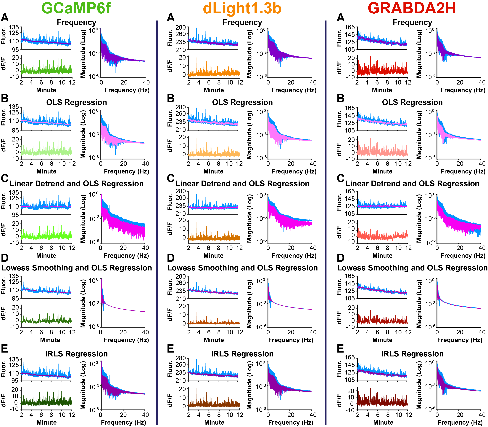 Background Scaling and Subtraction Method Comparison. Background scaling, subtraction examples and magnitude frequency plots for VTA GCaMP6f, NAcLS dLight1.3b, and NAcLS GRABDA2H with differing background scaling methods. A) Frequency Scaling: PASTa Protocol default method; The raw background is scaled to the signal based on a constant scaling factor determined by the ratio of the background to the signal in the frequency domain for frequencies greater than 10 Hz. B) OLS Regression Scaling: Commonly used method where the raw background is scaled to the signal with ordinary least squares regression, using the model fit to generate the scaled background stream. C) Linear Detrend and OLS Regression: Prior to scaling, both the raw signal and the raw background streams are detrended to remove the linear component of the stream (this is usually the decay of the signal over time). Ordinary least squares regression is then used with the detrended signals to generate the scaled background stream. D) Lowess Smoothing and OLS Regression: Prior to scaling, both the raw signal and the raw background streams are smoothed via Lowess smoothing. Ordinary least squares regression is then used with the smoothed signals to generate the scaled background stream. E) IRLS Regression: Relatively newer method where waw background is scaled to the signal with iteratively reweighted least squares regression to generate the scaled background stream.
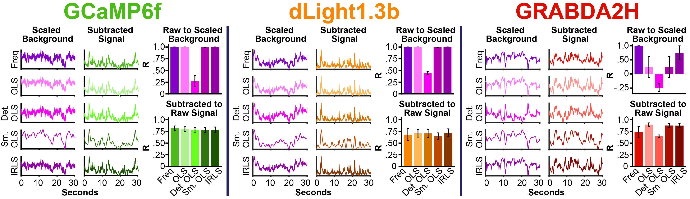 Background Scaling and Subtraction Method Correlations. Samples of scaled background and subtracted signal across scaling methods and sensors. Overall, correlations indicate that while most methods are similar for GCaMP6f and dLight1.3b, for GRABDA2H frequency scaling preserves the shape of the background and prevents underscaling relative to other methods.
PASTa Background Scaling and Subtraction Options
The PASTa toolbox subtraction function includes options to use OLS regression, detrending and OLS regression, Lowess Smoothing and OLS Regression, biexponential decay fitting with OLS regression or interquartile range scaling, and IRLS regression to scale the background prior to subtraction. See the References page for full citations of publications implementing each of these approaches for more detail.
Filtering Considerations
In addition to subtraction method, users can adjust filter parameters for the subtracted signal to better isolate the signal components that are of biological interest. By default, PASTa employs a 3rd order bandpass Butterworth filter with a high pass cutoff of 0.0051 Hz and a low pass cutoff of 2.286 Hz. The type and order of the filter were selected to best preserve the integrity of the frequencies of interest in the pass band. The cutoff frequencies were chosen based on the typical temporal dynamics of fluorescent sensors and population-level neural dynamics of interest. We primarily tested these parameters on recordings of GCaMP6f in dopamine (DA) cell bodies in the ventral tegmental area (VTA), and recordings of DA release in the nucleus accumbens (NAc) with GRABDA2H and dLight1.3b. If sensor kinetics or the range of frequencies of biological interest vary significantly from these, users may need to adjust the filtering parameters. Use of the frequency domain plot functions (plotFFTpower and plotFFTmag) may be helpful in visualizing the frequency components of the signal and performance of the filter relative to experimental goals. When performing the subtraction and filtering, filter parameters can be easily adjusted using optional function inputs.
 Filtering example. Examples of subtracted and filtered data for for VTA GCaMP6f, NAcLS dLight1.3b, and NAcLS GRABDA2H. A) Magnitude frequency plots of the Fast Fourier Transform (FFT) of the subtracted and filtered streams. Note that the Butterworth bandpass filter is overlaid (grey dashed line) on the pre-filtering subtracted stream magnitude frequency plots. B) Trace of the subtracted stream (signal - scaled background). C) Trace of the subtracted and filtered stream. D) Zoomed in overlaid example of the subtracted and filtered streams. Note that the filtered stream is in the darker shade.
Filtering example. Examples of subtracted and filtered data for for VTA GCaMP6f, NAcLS dLight1.3b, and NAcLS GRABDA2H. A) Magnitude frequency plots of the Fast Fourier Transform (FFT) of the subtracted and filtered streams. Note that the Butterworth bandpass filter is overlaid (grey dashed line) on the pre-filtering subtracted stream magnitude frequency plots. B) Trace of the subtracted stream (signal - scaled background). C) Trace of the subtracted and filtered stream. D) Zoomed in overlaid example of the subtracted and filtered streams. Note that the filtered stream is in the darker shade.
While the PASTa Protocol has default filter settings, users can override these as required by sensor or experimental design to modify the filter type (band-pass, high-pass, low-pass), order, and cutoff frequencies.
Subtracted and Filtered Stream Output
By default, PASTa outputs the subtracted and filtered signal streams in ΔF/F, which represents the signal as the proportional change in fluorescence relative to baseline, effectively normalizing the range of the fluorescence. This is advantageous as it makes the values of the signal stream scale-invariant, controlling for variability in sensor expression, fiber placement, and signal amplitude, and enabling comparison across trials, individual recording sessions, and subjects. In cases where baseline values are unstable or experimenters prefer to analyze absolute changes in fluorescence within a session, analysis of the uncorrected ΔF values may be preferable. Users can alter the output of the subtraction and filtering function to ΔF using an optional input to the function.
Overall Takeaways
Ultimately, each signal processing method may have advantages and disadvantages, and the ideal methodology may heavily depend on the fluorescent sensor, properties of the control or background stream, and design of the experiment. PASTa allows users to apply and compare a wide variety of background scaling and subtraction methods, integrating commonly used approaches in fiber photometry signal processing into a central toolbox.
Subtract and Filter Fiber Photometry Data
Use the subtractFPdata function to perform signal processing including scaling the background stream, subtracting the background from the signal stream, and filtering the subtracted signal. Original raw data fields in the data structure are preserved. Processed data fields with the scaling background, subtracted signal, and filtered signal are appended.
REQUIRED INPUTS:
-
data: The full data structure containing all session data.
-
sigfieldname: The name of the field (string) containing the signal stream (e.g., ‘sig’).
-
baqfieldname: The name of the field (string) containing the background stream (e.g., ‘baq’).
-
fsfieldname: The name of the field (string) containing the sampling rate of the data (e.g., ‘fs’).
OPTIONAL INPUTS:
- baqscalingtype: Manually set an alternative background scaling method. Available background scaling methods are:
- 'frequency' (default): The raw background is scaled to the signal based on a constant scaling factor determined by the ratio of the power of the background to the power of the signal in the frequency domain for frequencies greater than 10 Hz and less than 100 Hz.
- 'sigmean': Constant scaling method where the raw background is centered around the signal mean but otherwise unadjusted.
- 'OLS': Commonly used method where the raw background is scaled to the signal with ordinary least squares (OLS) regression, using the model fit to generate the scaled background stream (Sherathiya et al, 2021).
- 'detrendedOLS': Prior to scaling, both the raw signal and the raw background streams are detrended to remove the linear component of the stream (this is usually the decay of the signal over time). OLS regression is then used with the detrended signals to generate the scaled background stream.
- 'smoothedOLS': Prior to scaling, both the raw signal and the raw background streams are smoothed via Lowess smoothing. OLS regression is then used with the smoothed signals to generate the scaled background stream (Bruno et al, 2021).
- ‘biexpOLS’: Prior to scaling, both the raw signal and raw background streams are fit with a biexponential decay and divided by the fitted curve to linearize the signal. Ordinary least squares regression is then used to fit the linearized background to the linearized signal to generate the scaled background stream (Murphy et al, 2024).
- 'biexpQuartFit’: Prior to scaling, both the raw signal and raw background streams are fit with a biexponential decay and divided by the fitted curve to linearize the signal. The background stream is then scaled to the signal stream by multiplying the background by the interquartile range of the signal. The quartile fit background is then adjusted so that the background median value is the same as the signal median (Murphy et al, 2024).
- 'IRLS': Relatively newer method using iteratively reweighted least squares regression to fit the background to the signal stream to generate the scaled background (Keevers et al, 2025).
OPTIONAL INPUTS:
-
Optional for 'frequency' scaling only: Adjust 'frequency' scaling parameters using optional inputs.
- 'baqscalingfreqmin': Specify the minimum frequency (Hz) threshold for scaling (Default: 10 Hz). We recommend the minimum frequency should be well outside the range of interest, which is determined by your sensor and region of interest.
- 'baqscalingfreqmax': Specify the maximum frequency (Hz) threshold for scaling (Default: 100 Hz). The maximum is set to avoid over scaling due to high frequency bands well outside the range of interest. The maximum cannot be set higher than half the sampling rate of your recordings (fs).
- 'baqscalingperc': Adjust the scaling factor by a percent. By default, the scaling factor is unadjusted (set to 1, or 100%). Background scaling can be reduced if desired by setting the baqscalingperc to less than 1.
-
subtractionoutput: Manually specify the output type for the subtracted data streams. Options are \Delta$F/F ('dff'; default) or \Delta$F ('df').
- 'dff': Subtracted signal is output as \Delta$ F/F. \Delta$F/F = (Signal - Scaled Background) / Scaled Background
- 'df': Subtracted signal is output as \Delta$ F. \Delta$F = Signal - Scaled Background
-
'artifactremoval': Automatically detect and remove artifacts from the subtracted data stream. Set to 1 (Default: 0) to automatically detect and remove large artifacts from the subtracted data prior to filtering.
Note: If ‘artifactremoval’ is set to 1, identified artifacts will be added to a table with artifact indexes. In the subtracted signal stream, artifacts will be replaced with the mean of the signal in the subtracted data stream for compatibility with filtering. An additional field with artifacts replaced by NaNs will be added to the data structure. An additional field with the non-adjusted subtracted signal (sigsubraw) will also be appended to the data structure.
-
Optional filter parameters: Manually adjust the filter to be applied to the subtracted data stream.
-
'filtertype': Specify the filter type to apply to the data stream. Options are 'bandpass' (default), 'highpass', 'lowpass', or 'nofilter'.
-
'padding': By default, padding will be applied to the data stream prior to filtering. To override and skip padding, set to 0 (default: 1).
- 'paddingperc': Specify the percentage of data length to be used for padding. By default, 10% (0.1) of the data stream will be used for padding. Note that the padding percentage must be set to a minimum of 10% and a maximum of 100%.
- 'filterorder': Order to be used for the applied filter. By default, the order is set to 3.
- 'highpasscutoff': Frequency in Hz to use for the high-pass filter cutoff. Default: 2.286.
- 'lowpasscutoff': Frequency in Hz to use for the low-pass filter cutoff. Default: 0.0051.
-
OUTPUTS:
- data: The data structure appended with fields for:
- params.subtractFPdata: All parameters used by the function.
- baqscaled: The scaled background stream.
- baqscalingfactor: The background scaling factor.
- sigsub: The subtracted signal.
- sigfilt: The subtracted and filtered signal.
Code example: Subtraction with default scaling and filter parameters 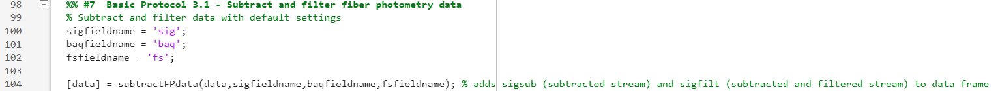
Plot Fiber Photometry Data Streams
Visualization of the raw and processed data streams is essential to validate the quality of data for every animal and recording session. Further, visual inspection is critical to confirm the consistency and efficacy of your signal processing parameters.
Plot Traces
To facilitate visualization across all stages of signal processing, PASTa includes a basic plot function that generates a figure with the raw signal (figure panel A), raw background (figure panel B), raw signal with overlaid scaled background (figure panel C), subtracted signal (figure panel D), and subtracted and filtered signal traces (figure panel E). This function can be used in a loop to customize plots and save outputs for each recording session.
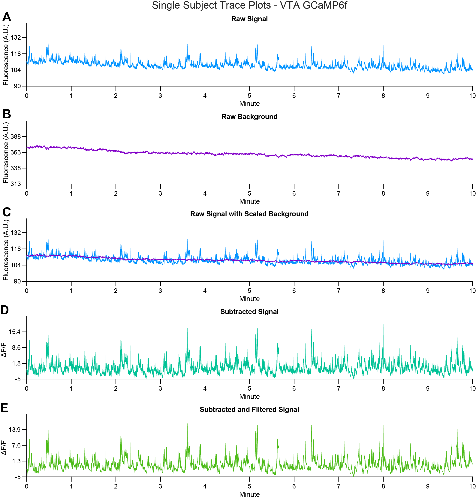 plotTraces. Example output of the plotTraces function, which generates a tiled layout with the following fiber photometry data streams for a single recording session (VTA dopamine activity, GCaMP6f): A) raw signal (465nm), B) raw background (405nm), C) raw signal overlaid with scaled background, D) subtracted signal, and E) subtracted and filtered signal.
Use the function plotTraces to generate the tiled layout with raw signal, raw background, raw signal with overlaid scaled background, subtracted signal, and subtracted and filtered signal for each session.
REQUIRED INPUTS: When calling the function, users must specify: - data: The full data structure containing all session data output from the subtractFPdata function.
-
fileindex: The file number to plot. Specify as an integer corresponding to the row in the data structure with the session to be plotted.
-
maintitle: The main title to be displayed on the figure.
OPTIONAL INPUTS: Automatically save the plot to a specified file path.
-
'saveoutput': Set to 1 to automatically save the created figure (default: 0).
-
'outputfiletype': Manually specify the file type of the saved figure. Available options are png, jpg, tiff, eps, and pdf (default: ‘png’).
-
'plotfilepath': Specify the path to save the figure to, including the full path from root directory to the figure folder and ending in the specific filename.
OUTPUT:
- A tiled layout figure containing plots of the raw signal (sig), raw background (baq), raw signal with overlaid scaled background (sig and baqscaled), subtracted (sigsub), and subtracted and filtered signal (sigfilt).
Optional: Use the plotTraces function in a loop to automatically plot all sessions, modify plots to add relevant experimental markets, and output the plots to the desired location.
For each session in the data structure, generate the maintitle for the plot. Call the function plotTraces and assign the output figure to an object. Add any desired markers (e.g., session start indicator or injection time point line) to each plot tile, adjust the size of the plot, prepare a unique file path, and save the plot to the specified plot file path.
Code example: plotTraces 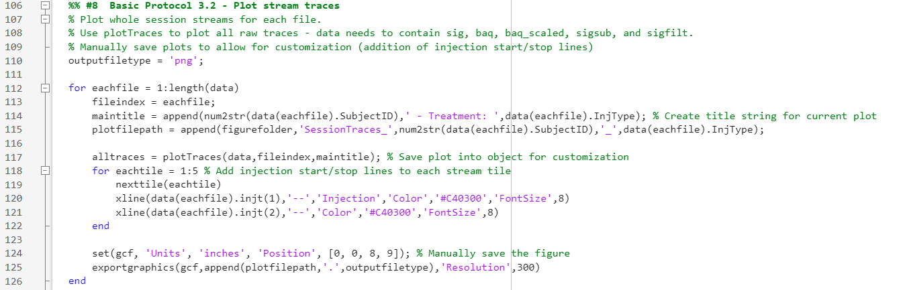
Review Trace Plots
Inspect the stream plots for data quality, including the individual stages of signal processing (background scaling, subtraction, subtraction and filtering). - Identify any quality issues in the raw data stream and visually confirm a strong signal to noise ratio. - Inspect the raw data streams for large artifacts and observe the efficacy of the subtraction and filtration for removing artifacts. - Identify anomalies with signal processing and visually inspect the efficacy of the background scaling method, subtraction, and filtering for maintaining the shape of the signal stream while removing common artifacts and photobleaching effects.
Plot FFTs
To facilitate inspection of signal quality and signal processing effects, PASTa includes two functions for visualizing the frequency spectra of raw and processed data streams – plotFFTpower and plotFFTmag (see figure below). Examining the frequency domain may help diagnose noise sources, evaluate filter performance, and assess the preservation of biologically relevant signal content.
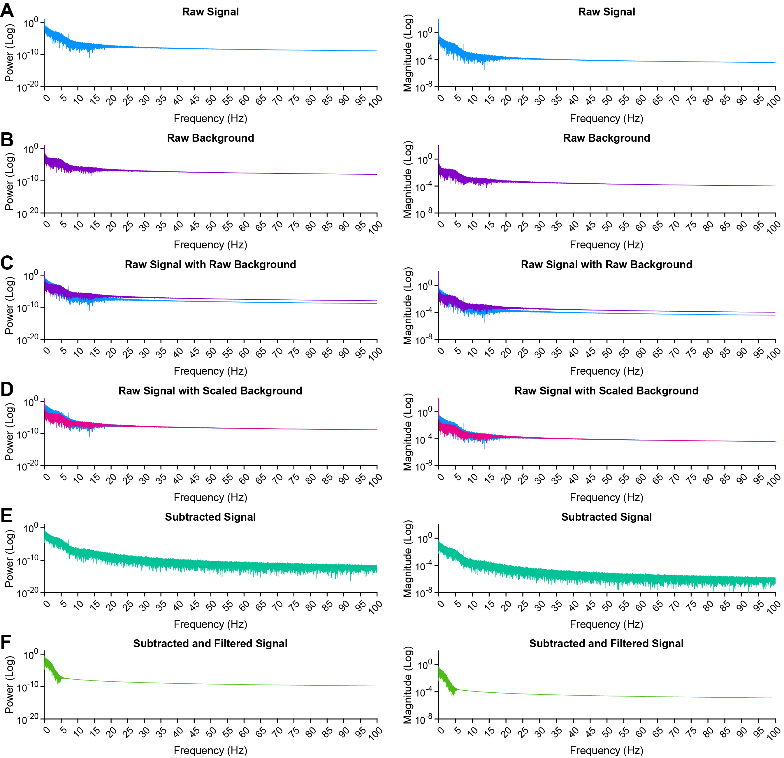 plotFFTs. Example output of the frequency domain representation of fiber photometry streams for a single recording session (VTA GCaMP6f) created by the functions plotFFTpower and plotFFTmag. Top to bottom: FFT power spectral density (left) and magnitude plots (right) show the frequency content on a log scale of: A) raw signal (465nm channel), B) raw background (405nm channel; control), C) overlaid raw signal and raw background, D) overlaid raw signal with scaled background, E) background subtracted signal, and F) background subtracted and filtered signal. These plots visualize how preprocessing steps reduce high frequency noise while preserving low frequency neural signal components.
Use the function plotFFTpower to plot the frequency-power plots and/or the function plotFFTmag to plot the frequency-magnitude plots for the FFTs of the raw signal, raw background, raw signal with overlaid scaled background, subtracted signal, and subtracted and filtered signal streams.
REQUIRED INPUTS: When calling the function, users must specify: - data: The full data structure containing all session data output from the subtractFPdata function. - fileindex: The file number to plot. Specify as an integer corresponding to the row in the data structure with the session to be plotted. - maintitle: The main title to be displayed on the figure. - fsfieldname: The name of the field containing the sampling rate of the streams (e.g., 'fs').
OPTIONAL INPUTS: - 'xmax': Adjust the x-axis (frequency) max value to aid visualization. Set 'xmax' to the desired frequency in Hz, or to 'actual' to plot all available frequencies. By default, plotFFTpower and plotFFTmag will plot power by frequency up to 100 Hz, excluding all values for frequencies above 100 Hz.
Optional: Automatically save the plot to a specified file path. - 'saveoutput': Set to 1 to automatically save the created figure (default: 0). - 'outputfiletype': Manually specify the file type of the saved figure. Available options are png, jpg, tiff, eps, and pdf (default: 'png'). - 'plotfilepath': Specify the path to save the figure to, including the full path from root directory to the figure folder and ending in the specific filename.
Optional: Use the plotFFTpower or plotFFTmag function in a loop to automatically plot the FFTs of all sessions and output the plots to the desired location. - For each session in the data structure, generate the maintitle for the plot. Call the function plotFFTpower or plotFFTmag and assign the output figure to an object. Adjust the size of the plot, prepare a unique file path, and save the plot to the specified plot file path.
Code example: plotFFTpower and plotFFTmag 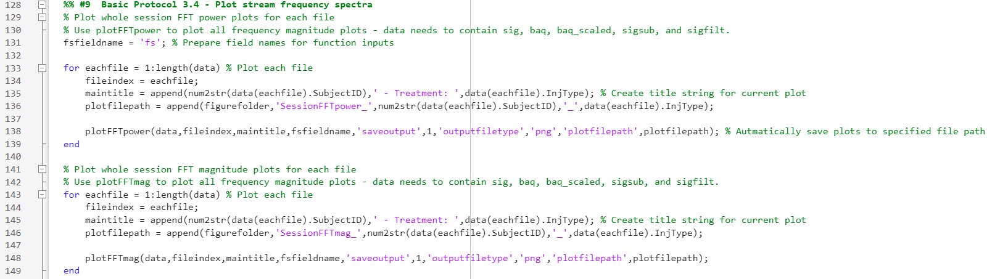
Review FFT Plots
Inspect the FFT stream plots for data quality, including the individual stages of signal processing (background scaling, subtraction, subtraction and filtering). - Identify any quality issues in the raw data stream and visually confirm a strong signal to noise ratio. - Inspect the raw data streams for large artifacts and observe the efficacy of the subtraction and filtration for removing artifacts. - Identify anomalies with signal processing and visually inspect the efficacy of the background scaling method, subtraction, and filtering for maintaining the shape of the signal stream while removing common artifacts and photobleaching effects.
Normalization
Normalization converts the filtered signal to Z score. While normalization is optional, it often facilitates comparisons across sessions and between treatment groups. The best method of normalization will depend heavily on the design of the experiment and individual recording session structure.
Normalization of fiber photometry data is a critical step that facilitates meaningful comparisons across time, within and between sessions, and between subjects. Choosing an appropriate normalization strategy can strongly influence both the shape and interpretation of neural signals. One widely used approach is z-score normalization, which converts ΔF/F traces into units of standard deviation (SD) from the mean. This standardization allows for intuitive interpretation of the data (e.g., effect size relative to variability) and enables cross-session and cross-subject comparisons by placing the processed signal on a common scale. However, z-score normalization is not without tradeoffs and can alter the shape and detectability of signals depending on the method of application (Wallace et al, 2025). Because it is a linear transformation, the effects on the signal depend on how the mean and SD are defined. Whole-session z-scoring, a commonly used approach, centers the entire stream at zero and scales it based on total session variance. While this facilitates comparisons within and between sessions, it can obscure absolute changes in fluorescence. For instance, a pharmacological treatment that increases the frequency or amplitude of transient events may inflate session-wide variance, leading to a compression of z-scored signals and masking of event-related dynamics. Conversely, treatments that suppress activity may reduce session variance, exaggerating minor fluctuations in the normalized data stream. Similarly, trial-based paradigms with strong evoked responses may see signal distortion if those large events dominate the normalization parameters.
To address these potential issues, normalization can instead be based on a stable pre-treatment or pre-trial baseline period within the session, preserving sensitivity to treatment or task-induced changes in the signal. Alternatively, users may select a custom normalization window (such as the first and last few minutes of a session) to avoid early session transients or anchor the analysis to a consistent resting state. In some cases, using raw ΔF or ΔF/F values without additional z-scoring may be preferable, particularly if the baseline is unavailable or unstable.
PASTa provides multiple normalization options, including whole-session, baseline, and fully custom z-score methods, enabling users to tailor normalization to their experimental design. To support transparent decision making, PASTa also includes a visualization function that outputs a tiled layout of multiple normalized traces from a session to help users evaluate the impact of different normalization strategies. Importantly, transient event detection functions in PASTa are compatible with both ΔF and ΔF/F streams, giving users flexibility in how they process and analyze their data while preserving interpretability.
PASTa includes multiple normalization options. Whole session normalization uses the mean and SD of the whole session. Session baseline uses the mean and SD from a specified session baseline, which may be useful in cases where a drug is delivered mid session, experimental events occur mid session, or other treatments may result in a sustained shift that could bias signal normalization. If additional options are required, please let us know!
 Normalization examples. A) Normalization (Z Score) to whole session mean and SD. B) Normalization (Z Score) to a 3-min session baseline mean and SD.
Normalization examples. A) Normalization (Z Score) to whole session mean and SD. B) Normalization (Z Score) to a 3-min session baseline mean and SD.
Option 1: Whole Session Z-Score
Normalize (Z-score) the subtracted and filtered signal to whole session mean and standard deviation. Use the normSession function to Z-score the subtracted and filtered signal stream.
REQUIRED INPUTS: When calling the function, specify: - data: The full data structure containing all session data output from the subtractFPdata function. - streamfieldname: The name of the field containing the stream to be normalized (e.g., 'sigfilt').
OUTPUT: - data: The full data structure with the normalized data appended to an additional field. The field name will be specified as the streamfieldname concatenated with 'z_normsession'. For example, if 'sigfilt' is the specified stream, the output normalized stream will be named 'sigfiltz_normsession'.
Option 2: Session Baseline Z-Score
Normalize (Z-score) to session baseline mean and standard deviation.
First, prepare fields in the data structure containing indexes for the desired baseline period start and end points for each session. These indexes should be in sample number.
Use the normBaseline function to Z-score the subtracted and filtered signal stream to the mean and standard deviation of the desired baseline period.
REQUIRED INPUTS: When calling the function, specify: - data: The full data structure containing all session data output from the subtractFPdata function. - streamfieldname: The name of the field containing the stream to be normalized (e.g., 'sigfilt'). - BLstartfieldname: The name of the field containing the baseline period start indices for each session. - BLendfieldname: The name of the field containing the baseline period end indices for each session.
OUTPUT: - data: The full data structure with the normalized data appended to an additional field. The field name will be specified as the streamfieldname concatenated with 'z_normbaseline'. For example, if 'sigfilt' is the specified stream, the output normalized stream will be named 'sigfiltz_normbaseline'.
Option 3: Custom Session Period Z-Score
Normalize (Z-score) to custom session period mean and standard deviation
Prepare a field in the data structure containing the portions of the stream to be used for the calculating of the mean and standard deviation for normalization. This could include any portions of the stream desired by the user and should be one combined array. For example, users may want to normalize both pre-trial and post-trial baselines. The pre- and post-trial stream data can be appended to one array and used for normalization of the whole session.
Use the normCustom function to Z-score the subtracted and filtered signal stream to the mean and standard deviation of the custom period.
REQUIRED INPUTS: When calling the function, specify: - data: The full data structure containing all session data output from the subtractFPdata function. - streamfieldname: The name of the field containing the stream to be normalized (e.g., 'sigfilt'). - customstreamfieldname: The name of the field containing the custom cut portion of the full stream to be used for the mean and standard deviation in Z-score calculations.
OUTPUT: - data: The full data structure with the normalized data appended to an additional field. The field name will be specified as the fullstreamfieldname concatenated with 'z_normcustom'. For example, if 'sigfilt' is the specified stream, the output normalized stream will be named 'sigfiltz_normcustom'.
CODE EXAMPLE: 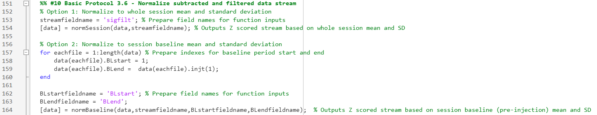
Plot Normalized Data Streams
Plot the normalized data streams using the plotNormTraces function. As normalization can affect the shape of the signal depending on the session and/or experimental design, it may be useful to plot and compare multiple methods of normalization, such as whole session vs session baseline.
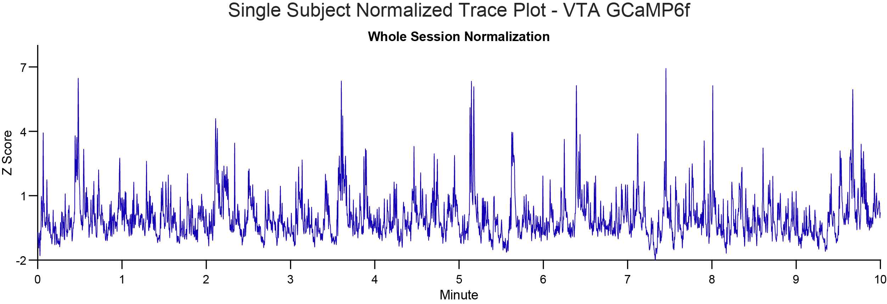 plotNormTraces Normalized trace plot of a single recording session of VTA dopamine activity (GCaMP6f). Subtracted and filtered data are Z-scored to the whole session mean and standard deviation.
Use the plotNormTraces function to generate a figure with plots of all normalized data streams. As many streams as desired can be input to allow for easy visual comparison.
REQUIRED INPUTS: When calling the function, specify:
-
data: The full data structure containing all session data including all normalized streams to be plotted.
-
fileindex: The file number to plot. Specify as an integer corresponding to the row in the data structure with the session to be plotted.
-
streamfieldnames: A cell array containing the names of the normalized streams to be plotted (e.g., {'sigfiltz_normsession', 'sigfiltz_normbaseline'}).
-
fsfieldname: The name of the field containing the sampling rate of the streams (e.g., 'fs').
-
maintitle: The main title to be displayed on the figure.
-
streamtitles: A cell array containing the desired titles for each subplot, corresponding to each stream in the streamfieldnames input. The titles should indicate which method of normalization was used for each stream provided (e.g., {'Normalized to Whole Session', 'Normalized to Session Baseline'}).
OPTIONAL INPUTS:
Automatically save the plot to a specified file path. - Set the optional input 'saveoutput' to 1. - Manually specify the file type to save the figure as (outputfiletype; default 'png'). Available options are png, jpg, tiff, eps, and pdf. - Use the optional input 'plotfilepath' to provide the full path for the figure including the full path from root directory to plot folder, ending in the specific filename.
CODE EXAMPLE: 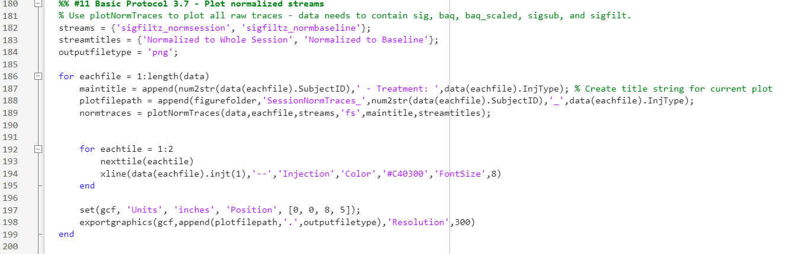
After signal processing is complete, continue to Transient Analysis.